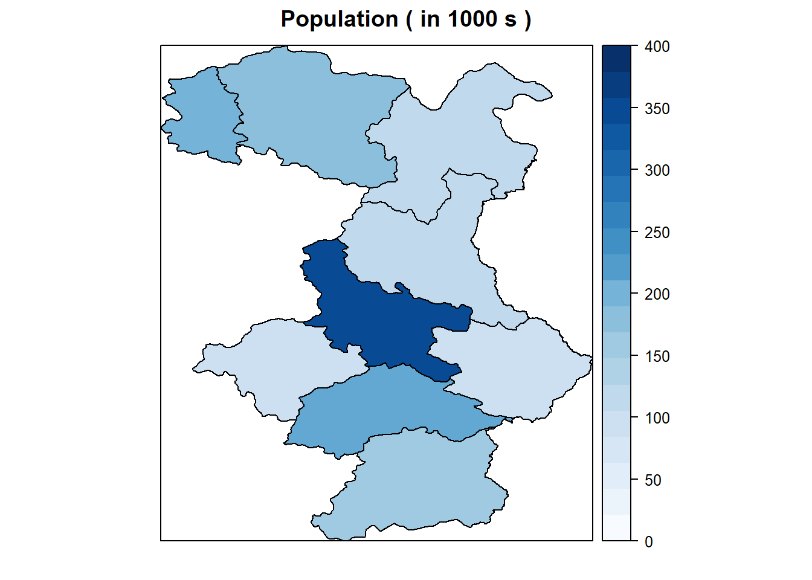

Chapter 4 Extracting information from data
There is a rich history of collecting environmental data and recently there has been an explosion in quantity and complexity of data related to the environment, from monitoring, satellite remote sensing, numerical modelling and many other sources. This chapter provides an introduction to the variety of different sources of data that are available and methods for obtaining, manipulating and processing data using the Tidyverse in R so that it is a form that can be readily used for analysis. The reader will have gained an understanding of the following topics:
How the Tidyverse can be used for data wrangling;
The importance of visualization in communication and understanding;
How R can be used to summarize and visualize data;
The use of shape files to produce maps in R;
How to calculate expected numbers and SMRs in practice;
How to perform health impact analysis.
Getting to know the structure of dataframes
Once a dataframe has been loaded into R we can examine it and perform analysis. Initially, we can understand our dataset by finding the number of observations and variables in data frames by using the and functions, respectively.
We will load and analyse data from the World Health Organization’s Global Air Pollution database. The data is open source and can be downloaded from the WHO’s website in format. It contains over 11,000 measurements of fine particulate matter air pollution (PM2.5 and PM10) for the years 2010-2019 and details of the locations of monitoring sites. We can import this into R and convert it to a dataframe either by using the
# import the dataset from a .csv file
WHO_GM_Database <- read.csv("data/WHOGMDatabase.csv")
# Viewing the structure of the variables within the WHO Air Pollution dataset
str(WHO_GM_Database)## 'data.frame': 65428 obs. of 34 variables:
## $ ISO3 : chr "AFG" "AFG" "AFG" "ALB" ...
## $ CountryName : chr "Afghanistan" "Afghanistan" "Afghanistan" "Albania" ...
## $ Year : chr "2009" "2009" "2019" "2015" ...
## $ StationID : chr "AFG1" "AFG2" "AFG3" "ALB1" ...
## $ StationIDOrig : chr NA NA "[US Diplomatic Post: Kabul]" "AL0205A" ...
## $ StationIDOldDatabase: int 1 1 0 1 1 1 1 1 1 1 ...
## $ City : chr "Mazar-e Sharif" "Kabul" "[Kabul]" NA ...
## $ CityReverseGeocoded : chr "Mazar-i-Sharif" "Kabul" "Kabul" "Durrës" ...
## $ CityGiulia : chr NA NA NA NA ...
## $ CityClean : chr "Mazar-e Sharif" "Kabul" "Kabul" "Durrës" ...
## $ Longitude : num 67.1 69.2 69.2 19.4 19.4 ...
## $ Latitude : num 36.7 34.5 34.5 41.3 41.3 ...
## $ PM25 : num 68 86 119.8 NA 14.3 ...
## $ PM25PercCoverage : num 0.0384 0.0384 0.18 NA 0.7533 ...
## $ PM25Grading : int 3 3 3 NA 1 NA NA NA 1 1 ...
## $ PM10 : num 334 260 NA 17.6 24.6 ...
## $ PM10PercCoverage : num NA NA NA 0.794 0.839 ...
## $ PM10Grading : int 4 4 NA 1 1 1 1 1 NA 1 ...
## $ LocationInfo : chr "NA, NA" "NA, NA" NA "AL0205A, NA" ...
## $ Source : chr "Magnusson et al., Broad Exposure Screening of Air Pollutants in the Occupational Environment of Swedish Soldier"| __truncated__ "Magnusson et al., Broad Exposure Screening of Air Pollutants in the Occupational Environment of Swedish Soldier"| __truncated__ "OpenAQ" "European Environment Agency (EEA)" ...
## $ MonitorType : chr "Urban" "Urban" "Unknown" "Traffic" ...
## $ MonitorTypeOrig : chr "urban" "urban" NA "Traffic" ...
## $ PM25Conv : int 0 0 0 1 0 1 1 1 0 0 ...
## $ UnspecifiedType : int 0 0 1 0 0 0 0 0 0 0 ...
## $ WebLink : chr NA NA "[[[\"EPA AirNow DOS\",\"http://airnow.gov/index.cfm?action=airnow.global_summary\"]]]" "https://www.eea.europa.eu/data-and-maps/Data/aqereporting-2" ...
## $ Version : chr "2016 Release" "2016 Release" "2021 Release" "Redownloaded for 2021 Release, replacing 2018 Release" ...
## $ WHOStatus : chr "Member state" "Member state" "Member state" "Member state" ...
## $ WHORegion : chr "EMR" "EMR" "EMR" "EUR" ...
## $ WHOIncomeRegion : chr "EMR LMI" "EMR LMI" "EMR LMI" "EUR LMI" ...
## $ SDG1Region : chr "Central Asia and Southern Asia" "Central Asia and Southern Asia" "Central Asia and Southern Asia" "Northern America and Europe" ...
## $ SDG2Region : chr "Southern Asia" "Southern Asia" "Southern Asia" "Europe" ...
## $ SDG3Region : chr "Southern Asia" "Southern Asia" "Southern Asia" "Southern Europe" ...
## $ GBDRegion : chr "Asia, South" "Asia, South" "Asia, South" "Europe, Central" ...
## $ GBDSuperRegion : chr "South Asia" "South Asia" "South Asia" "Central Europe, Eastern Europe and Central Asia" ...A quick way of viewing the dataset to see the data are using the names(), str() and head() functions. The names() function will display the variable names within a dataframe. The str() function will display the structure of the dataset, and the head() function will display the first 6 rows in the dataframe
Extracting and creating variables
# Extracting the variable Year from WHO_GM_Database and assign to a new variable called Year
YearOfMeasurement <- WHO_GM_Database[,'Year']
# show the first 5 entries in YearOfMeasurement
YearOfMeasurement[1:5]## [1] "2009" "2009" "2019" "2015" "2016"# Extracting the row (or observation) from WHO_GM_Database and assign to a new variable called FirstRow
FirstRow <- WHO_GM_Database[1,]
# Show the first 10 entries in FirstRow
FirstRow[1:10]## ISO3 CountryName Year StationID StationIDOrig StationIDOldDatabase
## 1 AFG Afghanistan 2009 AFG1 <NA> 1
## City CityReverseGeocoded CityGiulia CityClean
## 1 Mazar-e Sharif Mazar-i-Sharif <NA> Mazar-e Sharif## [1] "2019"Alternatively, you can extract variables from the dataframes by using the operator. We first specify the dataset, then give the name of the variable that we want. Let’s extract the variable from .
# Extracting the variable a from WHO_GM_Database, and show the first 3 entries
WHO_GM_Database$Year[1:3]## [1] "2009" "2009" "2019"Creating a new variable within a data frame is straightforward. Let’s create a variable within which is the difference between and 2010. For this we ex- tract the variable from and subtract 2010. In the dataframe, is a character variable (which you can see using ) and we will need to convert this to a numeric variable before performing the calculation.
## Warning: NAs introduced by coercion# Extracting Year a from WHO_GM_Database,subtract 2000 and make a new variable in the WHO_GM_Database dataframe. For clarity, we will only show the first 3 entries
WHO_GM_Database$TimeSince2010 <- WHO_GM_Database$Year - 2000
WHO_GM_Database$TimeSince2010[1:3]## [1] 9 9 19Simple manipulations using Tidyverse
Again, we will use the data frame and will start by looking at some basic operations, such as subsetting, sorting and adding new columns.
One operation we often want to do is to extract a subset of rows according to some criterion. For example, we may want to extract all rows of the iris dataset that correspond to the versicolor species. In Tidyverse, we can use a function called . For clarity, we will show the first 3 rows of the output
Filter rows in Tidyverse
## Loading required package: tidyverse## ── Attaching packages ──────────────────────────────────────────────── tidyverse 1.3.2 ──
## ✔ ggplot2 3.4.1 ✔ purrr 0.3.5
## ✔ tibble 3.1.8 ✔ dplyr 1.0.10
## ✔ tidyr 1.2.1 ✔ stringr 1.4.1
## ✔ readr 2.1.3 ✔ forcats 0.5.2
## ── Conflicts ─────────────────────────────────────────────────── tidyverse_conflicts() ──
## ✖ dplyr::filter() masks stats::filter()
## ✖ dplyr::lag() masks stats::lag()## ISO3 CountryName Year StationID StationIDOrig
## 1 AFG Afghanistan 2019 AFG3 [US Diplomatic Post: Kabul]
## 2 ALB Albania 2019 ALB2 AL0204A
## 3 ARE United Arab Emirates 2019 ARE22 Hamdan Street
## StationIDOldDatabase City CityReverseGeocoded CityGiulia CityClean
## 1 0 [Kabul] Kabul <NA> Kabul
## 2 1 <NA> Vlorë <NA> Vlorë
## 3 0 Abu dhabi Abu Dhabi <NA> Abu dhabi
## Longitude Latitude PM25 PM25PercCoverage PM25Grading PM10
## 1 69.19051 34.53581 119.77360 0.1800000 3 NA
## 2 19.48620 40.40309 10.31525 0.7510274 1 NA
## 3 54.37730 24.45390 NA NA NA 100
## PM10PercCoverage PM10Grading LocationInfo
## 1 NA NA <NA>
## 2 NA NA AL0204A, NA
## 3 NA 4 Hamdan Street, Abu dhabi, United Arab Emirates
## Source MonitorType
## 1 OpenAQ Unknown
## 2 European Environment Agency (EEA) Background
## 3 Statistics Center - Abu Dhabi from Environment Agency - Abu Dhabi Urban
## MonitorTypeOrig PM25Conv UnspecifiedType
## 1 <NA> 0 1
## 2 Background 0 0
## 3 traffic 1 0
## WebLink
## 1 [[["EPA AirNow DOS","http://airnow.gov/index.cfm?action=airnow.global_summary"]]]
## 2 https://www.eea.europa.eu/data-and-maps/Data/aqereporting-2
## 3 <NA>
## Version WHOStatus WHORegion
## 1 2021 Release Member state EMR
## 2 Redownloaded for 2021 Release, replacing 2018 Release Member state EUR
## 3 2021 Release Member state EMR
## WHOIncomeRegion SDG1Region SDG2Region
## 1 EMR LMI Central Asia and Southern Asia Southern Asia
## 2 EUR LMI Northern America and Europe Europe
## 3 EMR HI Western Asia and Northern Africa Western Asia
## SDG3Region GBDRegion
## 1 Southern Asia Asia, South
## 2 Southern Europe Europe, Central
## 3 Western Asia North Africa / Middle East
## GBDSuperRegion TimeSince2010
## 1 South Asia 19
## 2 Central Europe, Eastern Europe and Central Asia 19
## 3 North Africa / Middle East 19Sorting rows in Tidyverse
The function will sort the data by (alphabetically) and then by (numerically). Again, for clarify we will show only the first few rows of the data (9 rows)
## ISO3 CountryName Year StationID StationIDOrig
## 1 AFG Afghanistan 2009 AFG1 <NA>
## 2 AFG Afghanistan 2009 AFG2 <NA>
## 3 AFG Afghanistan 2019 AFG3 [US Diplomatic Post: Kabul]
## 4 ALB Albania 2011 ALB4 AL0201A
## 5 ALB Albania 2011 ALB5 AL0202A
## 6 ALB Albania 2012 ALB4 AL0201A
## 7 ALB Albania 2012 ALB5 AL0202A
## 8 ALB Albania 2013 ALB4 AL0201A
## 9 ALB Albania 2014 ALB2 AL0204A
## StationIDOldDatabase City CityReverseGeocoded CityGiulia
## 1 1 Mazar-e Sharif Mazar-i-Sharif <NA>
## 2 1 Kabul Kabul <NA>
## 3 0 [Kabul] Kabul <NA>
## 4 1 <NA> Tirana <NA>
## 5 1 <NA> Tirana <NA>
## 6 1 <NA> Tirana <NA>
## 7 1 <NA> Tirana <NA>
## 8 1 <NA> Tirana <NA>
## 9 1 <NA> Vlorë <NA>
## CityClean Longitude Latitude PM25 PM25PercCoverage PM25Grading
## 1 Mazar-e Sharif 67.11667 36.70000 68.00000 0.03835616 3
## 2 Kabul 69.19128 34.53076 86.00000 0.03835616 3
## 3 Kabul 69.19051 34.53581 119.77360 0.18000000 3
## 4 Tirana 19.82177 41.33027 27.53000 0.97991000 1
## 5 Tirana 19.85167 41.34560 37.49400 0.94475000 1
## 6 Tirana 19.82177 41.33027 20.20700 0.97359000 1
## 7 Tirana 19.85167 41.34560 24.52900 0.97848000 1
## 8 Tirana 19.82177 41.33027 16.06237 0.77477169 1
## 9 Vlorë 19.48620 40.40309 NA NA NA
## PM10 PM10PercCoverage PM10Grading LocationInfo
## 1 334.00000 NA 4 NA, NA
## 2 260.00000 NA 4 NA, NA
## 3 NA NA NA <NA>
## 4 52.36900 0.9847000 1 AL0201A, NA
## 5 112.44400 0.9172400 1 AL0202A, NA
## 6 33.99500 0.9833800 1 AL0201A, NA
## 7 37.85900 0.9788300 1 AL0202A, NA
## 8 31.61542 0.7990868 1 AL0201A, NA
## 9 15.25370 0.8649543 1 AL0204A, NA
## Source
## 1 Magnusson et al., Broad Exposure Screening of Air Pollutants in the Occupational Environment of Swedish Soldiers Deployed in Afghanistan; MILITARY MEDICINE, 177, 3:318, 2012
## 2 Magnusson et al., Broad Exposure Screening of Air Pollutants in the Occupational Environment of Swedish Soldiers Deployed in Afghanistan; MILITARY MEDICINE, 177, 3:318, 2012
## 3 OpenAQ
## 4 European Environment Agency (EEA)
## 5 European Environment Agency (EEA)
## 6 European Environment Agency (EEA)
## 7 European Environment Agency (EEA)
## 8 European Environment Agency (EEA)
## 9 European Environment Agency (EEA)
## MonitorType MonitorTypeOrig PM25Conv UnspecifiedType
## 1 Urban urban 0 0
## 2 Urban urban 0 0
## 3 Unknown <NA> 0 1
## 4 Traffic Traffic 0 0
## 5 Traffic Traffic 0 0
## 6 Traffic Traffic 0 0
## 7 Traffic Traffic 0 0
## 8 Traffic Traffic 0 0
## 9 Background Background 1 0
## WebLink
## 1 <NA>
## 2 <NA>
## 3 [[["EPA AirNow DOS","http://airnow.gov/index.cfm?action=airnow.global_summary"]]]
## 4 https://www.eea.europa.eu/data-and-maps/Data/aqereporting-2
## 5 https://www.eea.europa.eu/data-and-maps/Data/aqereporting-2
## 6 https://www.eea.europa.eu/data-and-maps/Data/aqereporting-2
## 7 https://www.eea.europa.eu/data-and-maps/Data/aqereporting-2
## 8 https://www.eea.europa.eu/data-and-maps/Data/aqereporting-2
## 9 https://www.eea.europa.eu/data-and-maps/Data/aqereporting-2
## Version WHOStatus WHORegion
## 1 2016 Release Member state EMR
## 2 2016 Release Member state EMR
## 3 2021 Release Member state EMR
## 4 Redownloaded for 2021 Release, replacing 2018 Release Member state EUR
## 5 Redownloaded for 2021 Release, replacing 2018 Release Member state EUR
## 6 Redownloaded for 2021 Release, replacing 2018 Release Member state EUR
## 7 Redownloaded for 2021 Release, replacing 2018 Release Member state EUR
## 8 Redownloaded for 2021 Release, replacing 2018 Release Member state EUR
## 9 Redownloaded for 2021 Release, replacing 2018 Release Member state EUR
## WHOIncomeRegion SDG1Region SDG2Region SDG3Region
## 1 EMR LMI Central Asia and Southern Asia Southern Asia Southern Asia
## 2 EMR LMI Central Asia and Southern Asia Southern Asia Southern Asia
## 3 EMR LMI Central Asia and Southern Asia Southern Asia Southern Asia
## 4 EUR LMI Northern America and Europe Europe Southern Europe
## 5 EUR LMI Northern America and Europe Europe Southern Europe
## 6 EUR LMI Northern America and Europe Europe Southern Europe
## 7 EUR LMI Northern America and Europe Europe Southern Europe
## 8 EUR LMI Northern America and Europe Europe Southern Europe
## 9 EUR LMI Northern America and Europe Europe Southern Europe
## GBDRegion GBDSuperRegion TimeSince2010
## 1 Asia, South South Asia 9
## 2 Asia, South South Asia 9
## 3 Asia, South South Asia 19
## 4 Europe, Central Central Europe, Eastern Europe and Central Asia 11
## 5 Europe, Central Central Europe, Eastern Europe and Central Asia 11
## 6 Europe, Central Central Europe, Eastern Europe and Central Asia 12
## 7 Europe, Central Central Europe, Eastern Europe and Central Asia 12
## 8 Europe, Central Central Europe, Eastern Europe and Central Asia 13
## 9 Europe, Central Central Europe, Eastern Europe and Central Asia 14Select columns in Tidyverse
Now let’s say that we wish to select just the , and columns from the data set and assign it to a new dataset, . In Tidyverse we can use the function:
WHO_GM_Database_selectcolumns <- select(WHO_GM_Database, CountryName, Year, PM25)
head(WHO_GM_Database_selectcolumns)## CountryName Year PM25
## 1 Afghanistan 2009 68.00000
## 2 Afghanistan 2009 86.00000
## 3 Afghanistan 2019 119.77360
## 4 Albania 2015 NA
## 5 Albania 2016 14.32325
## 6 Albania 2014 NAThere is even a set of functions to help extract columns based on pattern matching, e.g.
WHO_GM_Database_selectcolumns2 <- select(WHO_GM_Database, starts_with("Country"))
head(WHO_GM_Database_selectcolumns2)## CountryName
## 1 Afghanistan
## 2 Afghanistan
## 3 Afghanistan
## 4 Albania
## 5 Albania
## 6 AlbaniaNote that we can also remove columns using an operator, e.g.
WHO_GM_Database_selectcolumns3 <- select(WHO_GM_Database, -starts_with("SDG"))
head(WHO_GM_Database_selectcolumns3)## ISO3 CountryName Year StationID StationIDOrig
## 1 AFG Afghanistan 2009 AFG1 <NA>
## 2 AFG Afghanistan 2009 AFG2 <NA>
## 3 AFG Afghanistan 2019 AFG3 [US Diplomatic Post: Kabul]
## 4 ALB Albania 2015 ALB1 AL0205A
## 5 ALB Albania 2016 ALB1 AL0205A
## 6 ALB Albania 2014 ALB2 AL0204A
## StationIDOldDatabase City CityReverseGeocoded CityGiulia
## 1 1 Mazar-e Sharif Mazar-i-Sharif <NA>
## 2 1 Kabul Kabul <NA>
## 3 0 [Kabul] Kabul <NA>
## 4 1 <NA> Durrës <NA>
## 5 1 <NA> Durrës <NA>
## 6 1 <NA> Vlorë <NA>
## CityClean Longitude Latitude PM25 PM25PercCoverage PM25Grading
## 1 Mazar-e Sharif 67.11667 36.70000 68.00000 0.03835616 3
## 2 Kabul 69.19128 34.53076 86.00000 0.03835616 3
## 3 Kabul 69.19051 34.53581 119.77360 0.18000000 3
## 4 Durrës 19.44920 41.31990 NA NA NA
## 5 Durrës 19.44920 41.31990 14.32325 0.75330146 1
## 6 Vlorë 19.48620 40.40309 NA NA NA
## PM10 PM10PercCoverage PM10Grading LocationInfo
## 1 334.0000 NA 4 NA, NA
## 2 260.0000 NA 4 NA, NA
## 3 NA NA NA <NA>
## 4 17.6483 0.7937215 1 AL0205A, NA
## 5 24.5591 0.8385701 1 AL0205A, NA
## 6 15.2537 0.8649543 1 AL0204A, NA
## Source
## 1 Magnusson et al., Broad Exposure Screening of Air Pollutants in the Occupational Environment of Swedish Soldiers Deployed in Afghanistan; MILITARY MEDICINE, 177, 3:318, 2012
## 2 Magnusson et al., Broad Exposure Screening of Air Pollutants in the Occupational Environment of Swedish Soldiers Deployed in Afghanistan; MILITARY MEDICINE, 177, 3:318, 2012
## 3 OpenAQ
## 4 European Environment Agency (EEA)
## 5 European Environment Agency (EEA)
## 6 European Environment Agency (EEA)
## MonitorType MonitorTypeOrig PM25Conv UnspecifiedType
## 1 Urban urban 0 0
## 2 Urban urban 0 0
## 3 Unknown <NA> 0 1
## 4 Traffic Traffic 1 0
## 5 Traffic Traffic 0 0
## 6 Background Background 1 0
## WebLink
## 1 <NA>
## 2 <NA>
## 3 [[["EPA AirNow DOS","http://airnow.gov/index.cfm?action=airnow.global_summary"]]]
## 4 https://www.eea.europa.eu/data-and-maps/Data/aqereporting-2
## 5 https://www.eea.europa.eu/data-and-maps/Data/aqereporting-2
## 6 https://www.eea.europa.eu/data-and-maps/Data/aqereporting-2
## Version WHOStatus WHORegion
## 1 2016 Release Member state EMR
## 2 2016 Release Member state EMR
## 3 2021 Release Member state EMR
## 4 Redownloaded for 2021 Release, replacing 2018 Release Member state EUR
## 5 Redownloaded for 2021 Release, replacing 2018 Release Member state EUR
## 6 Redownloaded for 2021 Release, replacing 2018 Release Member state EUR
## WHOIncomeRegion GBDRegion
## 1 EMR LMI Asia, South
## 2 EMR LMI Asia, South
## 3 EMR LMI Asia, South
## 4 EUR LMI Europe, Central
## 5 EUR LMI Europe, Central
## 6 EUR LMI Europe, Central
## GBDSuperRegion TimeSince2010
## 1 South Asia 9
## 2 South Asia 9
## 3 South Asia 19
## 4 Central Europe, Eastern Europe and Central Asia 15
## 5 Central Europe, Eastern Europe and Central Asia 16
## 6 Central Europe, Eastern Europe and Central Asia 14WHO_GM_Database_selectcolumns4 <- select(WHO_GM_Database, -SDG1Region, -SDG2Region, SDG3Region)
head(WHO_GM_Database_selectcolumns4)## ISO3 CountryName Year StationID StationIDOrig
## 1 AFG Afghanistan 2009 AFG1 <NA>
## 2 AFG Afghanistan 2009 AFG2 <NA>
## 3 AFG Afghanistan 2019 AFG3 [US Diplomatic Post: Kabul]
## 4 ALB Albania 2015 ALB1 AL0205A
## 5 ALB Albania 2016 ALB1 AL0205A
## 6 ALB Albania 2014 ALB2 AL0204A
## StationIDOldDatabase City CityReverseGeocoded CityGiulia
## 1 1 Mazar-e Sharif Mazar-i-Sharif <NA>
## 2 1 Kabul Kabul <NA>
## 3 0 [Kabul] Kabul <NA>
## 4 1 <NA> Durrës <NA>
## 5 1 <NA> Durrës <NA>
## 6 1 <NA> Vlorë <NA>
## CityClean Longitude Latitude PM25 PM25PercCoverage PM25Grading
## 1 Mazar-e Sharif 67.11667 36.70000 68.00000 0.03835616 3
## 2 Kabul 69.19128 34.53076 86.00000 0.03835616 3
## 3 Kabul 69.19051 34.53581 119.77360 0.18000000 3
## 4 Durrës 19.44920 41.31990 NA NA NA
## 5 Durrës 19.44920 41.31990 14.32325 0.75330146 1
## 6 Vlorë 19.48620 40.40309 NA NA NA
## PM10 PM10PercCoverage PM10Grading LocationInfo
## 1 334.0000 NA 4 NA, NA
## 2 260.0000 NA 4 NA, NA
## 3 NA NA NA <NA>
## 4 17.6483 0.7937215 1 AL0205A, NA
## 5 24.5591 0.8385701 1 AL0205A, NA
## 6 15.2537 0.8649543 1 AL0204A, NA
## Source
## 1 Magnusson et al., Broad Exposure Screening of Air Pollutants in the Occupational Environment of Swedish Soldiers Deployed in Afghanistan; MILITARY MEDICINE, 177, 3:318, 2012
## 2 Magnusson et al., Broad Exposure Screening of Air Pollutants in the Occupational Environment of Swedish Soldiers Deployed in Afghanistan; MILITARY MEDICINE, 177, 3:318, 2012
## 3 OpenAQ
## 4 European Environment Agency (EEA)
## 5 European Environment Agency (EEA)
## 6 European Environment Agency (EEA)
## MonitorType MonitorTypeOrig PM25Conv UnspecifiedType
## 1 Urban urban 0 0
## 2 Urban urban 0 0
## 3 Unknown <NA> 0 1
## 4 Traffic Traffic 1 0
## 5 Traffic Traffic 0 0
## 6 Background Background 1 0
## WebLink
## 1 <NA>
## 2 <NA>
## 3 [[["EPA AirNow DOS","http://airnow.gov/index.cfm?action=airnow.global_summary"]]]
## 4 https://www.eea.europa.eu/data-and-maps/Data/aqereporting-2
## 5 https://www.eea.europa.eu/data-and-maps/Data/aqereporting-2
## 6 https://www.eea.europa.eu/data-and-maps/Data/aqereporting-2
## Version WHOStatus WHORegion
## 1 2016 Release Member state EMR
## 2 2016 Release Member state EMR
## 3 2021 Release Member state EMR
## 4 Redownloaded for 2021 Release, replacing 2018 Release Member state EUR
## 5 Redownloaded for 2021 Release, replacing 2018 Release Member state EUR
## 6 Redownloaded for 2021 Release, replacing 2018 Release Member state EUR
## WHOIncomeRegion SDG3Region GBDRegion
## 1 EMR LMI Southern Asia Asia, South
## 2 EMR LMI Southern Asia Asia, South
## 3 EMR LMI Southern Asia Asia, South
## 4 EUR LMI Southern Europe Europe, Central
## 5 EUR LMI Southern Europe Europe, Central
## 6 EUR LMI Southern Europe Europe, Central
## GBDSuperRegion TimeSince2010
## 1 South Asia 9
## 2 South Asia 9
## 3 South Asia 19
## 4 Central Europe, Eastern Europe and Central Asia 15
## 5 Central Europe, Eastern Europe and Central Asia 16
## 6 Central Europe, Eastern Europe and Central Asia 14Adding columns
Finally, let’s add a new column representing the different between and 2000 as before, but using the . To avoid over-riding the first version we will call it and for clarity will only show the first three rows.
WHO_GM_Database$Year <- as.numeric(WHO_GM_Database$Year)
mutate(WHO_GM_Database, TimeSince2010_tidy = Year - 2000)[1:2,]## ISO3 CountryName Year StationID StationIDOrig StationIDOldDatabase
## 1 AFG Afghanistan 2009 AFG1 <NA> 1
## 2 AFG Afghanistan 2009 AFG2 <NA> 1
## City CityReverseGeocoded CityGiulia CityClean Longitude
## 1 Mazar-e Sharif Mazar-i-Sharif <NA> Mazar-e Sharif 67.11667
## 2 Kabul Kabul <NA> Kabul 69.19128
## Latitude PM25 PM25PercCoverage PM25Grading PM10 PM10PercCoverage PM10Grading
## 1 36.70000 68 0.03835616 3 334 NA 4
## 2 34.53076 86 0.03835616 3 260 NA 4
## LocationInfo
## 1 NA, NA
## 2 NA, NA
## Source
## 1 Magnusson et al., Broad Exposure Screening of Air Pollutants in the Occupational Environment of Swedish Soldiers Deployed in Afghanistan; MILITARY MEDICINE, 177, 3:318, 2012
## 2 Magnusson et al., Broad Exposure Screening of Air Pollutants in the Occupational Environment of Swedish Soldiers Deployed in Afghanistan; MILITARY MEDICINE, 177, 3:318, 2012
## MonitorType MonitorTypeOrig PM25Conv UnspecifiedType WebLink Version
## 1 Urban urban 0 0 <NA> 2016 Release
## 2 Urban urban 0 0 <NA> 2016 Release
## WHOStatus WHORegion WHOIncomeRegion SDG1Region
## 1 Member state EMR EMR LMI Central Asia and Southern Asia
## 2 Member state EMR EMR LMI Central Asia and Southern Asia
## SDG2Region SDG3Region GBDRegion GBDSuperRegion TimeSince2010
## 1 Southern Asia Southern Asia Asia, South South Asia 9
## 2 Southern Asia Southern Asia Asia, South South Asia 9
## TimeSince2010_tidy
## 1 9
## 2 9Pipes
Piping comes from Unix scripting, and simply means a chain of commands, such that the results from each command feed into the next one. It can be helpful in making code more succinct, and uses the pipe operator %>% to chain functions together.
For example, the following will filter the dataframe to extract rows when the year is 2019 and then how the first 6 rows using the head function.
## ISO3 CountryName Year StationID StationIDOrig
## 1 AFG Afghanistan 2019 AFG3 [US Diplomatic Post: Kabul]
## 2 ALB Albania 2019 ALB2 AL0204A
## 3 ARE United Arab Emirates 2019 ARE22 Hamdan Street
## 4 ARE United Arab Emirates 2019 ARE22 Khadejah School
## 5 ARE United Arab Emirates 2019 ARE22 Khalifa School
## 6 ARE United Arab Emirates 2019 ARE22 Al Maqta
## StationIDOldDatabase City CityReverseGeocoded CityGiulia CityClean
## 1 0 [Kabul] Kabul <NA> Kabul
## 2 1 <NA> Vlorë <NA> Vlorë
## 3 0 Abu dhabi Abu Dhabi <NA> Abu dhabi
## 4 0 Abu dhabi Abu Dhabi <NA> Abu dhabi
## 5 0 Abu dhabi Abu Dhabi <NA> Abu dhabi
## 6 0 Abu dhabi Abu Dhabi <NA> Abu dhabi
## Longitude Latitude PM25 PM25PercCoverage PM25Grading PM10
## 1 69.19051 34.53581 119.77360 0.1800000 3 NA
## 2 19.48620 40.40309 10.31525 0.7510274 1 NA
## 3 54.37730 24.45390 NA NA NA 100.00
## 4 54.37730 24.45390 NA NA NA 102.29
## 5 54.37730 24.45390 NA NA NA 104.69
## 6 54.37730 24.45390 NA NA NA 112.58
## PM10PercCoverage PM10Grading LocationInfo
## 1 NA NA <NA>
## 2 NA NA AL0204A, NA
## 3 NA 4 Hamdan Street, Abu dhabi, United Arab Emirates
## 4 NA 4 Khadejah School, Abu dhabi, United Arab Emirates
## 5 NA 4 Khalifa School, Abu dhabi, United Arab Emirates
## 6 NA 4 Al Maqta, Abu dhabi, United Arab Emirates
## Source MonitorType
## 1 OpenAQ Unknown
## 2 European Environment Agency (EEA) Background
## 3 Statistics Center - Abu Dhabi from Environment Agency - Abu Dhabi Urban
## 4 Statistics Center - Abu Dhabi from Environment Agency - Abu Dhabi Urban
## 5 Statistics Center - Abu Dhabi from Environment Agency - Abu Dhabi Urban
## 6 Statistics Center - Abu Dhabi from Environment Agency - Abu Dhabi Urban
## MonitorTypeOrig PM25Conv UnspecifiedType
## 1 <NA> 0 1
## 2 Background 0 0
## 3 traffic 1 0
## 4 down town 1 0
## 5 Urban/Residential 1 0
## 6 Urban/Residential 1 0
## WebLink
## 1 [[["EPA AirNow DOS","http://airnow.gov/index.cfm?action=airnow.global_summary"]]]
## 2 https://www.eea.europa.eu/data-and-maps/Data/aqereporting-2
## 3 <NA>
## 4 <NA>
## 5 <NA>
## 6 <NA>
## Version WHOStatus WHORegion
## 1 2021 Release Member state EMR
## 2 Redownloaded for 2021 Release, replacing 2018 Release Member state EUR
## 3 2021 Release Member state EMR
## 4 2021 Release Member state EMR
## 5 2021 Release Member state EMR
## 6 2021 Release Member state EMR
## WHOIncomeRegion SDG1Region SDG2Region
## 1 EMR LMI Central Asia and Southern Asia Southern Asia
## 2 EUR LMI Northern America and Europe Europe
## 3 EMR HI Western Asia and Northern Africa Western Asia
## 4 EMR HI Western Asia and Northern Africa Western Asia
## 5 EMR HI Western Asia and Northern Africa Western Asia
## 6 EMR HI Western Asia and Northern Africa Western Asia
## SDG3Region GBDRegion
## 1 Southern Asia Asia, South
## 2 Southern Europe Europe, Central
## 3 Western Asia North Africa / Middle East
## 4 Western Asia North Africa / Middle East
## 5 Western Asia North Africa / Middle East
## 6 Western Asia North Africa / Middle East
## GBDSuperRegion TimeSince2010
## 1 South Asia 19
## 2 Central Europe, Eastern Europe and Central Asia 19
## 3 North Africa / Middle East 19
## 4 North Africa / Middle East 19
## 5 North Africa / Middle East 19
## 6 North Africa / Middle East 19Chaining pipes
Pipes can be chained together multiple times. For example:
WHO_GM_Database$Year <- as.numeric(WHO_GM_Database$Year)
WHO_GM_Database %>%
filter(Year == 2019) %>% select(CountryName, Year, PM25, -starts_with("SDG")) %>% mutate(TimeSince2010_tidy = Year - 2000) %>% arrange(CountryName, Year) %>%
head()## CountryName Year PM25 TimeSince2010_tidy
## 1 Afghanistan 2019 119.77360 19
## 2 Albania 2019 10.31525 19
## 3 Algeria 2019 21.53338 19
## 4 Australia 2019 NA 19
## 5 Australia 2019 NA 19
## 6 Australia 2019 NA 19Grouping and summarizing
A common thing we might want to do is to produce summaries of some variable for different subsets of the data. For example, we might want the mean values of for each . The dplyr package (within ) provides a function group_by() that allows us to group data, and summarize() that allows us to summarize data.
In this case, we can think of what we want to do as the data by and then averaging the values within each group. Note that there are missing values in as in some locations only is measured, and vice-versa. We use to exclude missing values when calculating the mean.
## # A tibble: 127 × 2
## CountryName mn
## <chr> <dbl>
## 1 Afghanistan 91.3
## 2 Albania 22.3
## 3 Algeria 21.5
## 4 Andorra 11.0
## 5 Argentina 10.2
## 6 Australia 8.11
## 7 Austria 14.2
## 8 Bahamas 4.16
## 9 Bahrain 55.4
## 10 Bangladesh 76.8
## # ℹ 117 more rowsSummarize
The summarize() function applies a function to a dataframe or subsets of a data frame. For example, we can produce a table of estimates for the mean and variance of both PM25 lengths and PM10, within each CountryName.
WHO_GM_Database %>%
group_by(CountryName) %>%
summarize(MeanPM25 = mean(PM25, na.rm=TRUE), MeanPM10 = mean(PM10, na.rm=TRUE), VarPM25 = var(PM25, na.rm=TRUE), VarPM10 = var(PM10, na.rm=TRUE))## # A tibble: 127 × 5
## CountryName MeanPM25 MeanPM10 VarPM25 VarPM10
## <chr> <dbl> <dbl> <dbl> <dbl>
## 1 Afghanistan 91.3 297 691. 2738
## 2 Albania 22.3 36.4 77.9 655.
## 3 Algeria 21.5 NaN NA NA
## 4 Andorra 11.0 19.2 0.276 1.09
## 5 Argentina 10.2 27.4 0.0103 1.45
## 6 Australia 8.11 17.7 54.2 58.4
## 7 Austria 14.2 20.4 11.2 25.8
## 8 Bahamas 4.16 4.65 1.04 1.19
## 9 Bahrain 55.4 176. 103. 4844.
## 10 Bangladesh 76.8 142. 690. 1784.
## # ℹ 117 more rowsExample 4.1: Health impacts associated with outdoor air pollution
We now demonstrate how using dataframes and the can allow us to perform a health impact analysis of air pollution very efficiently. We will be calculating the annual number of deaths attributable to PM\(_{2.5}\).
We wish to estimate the annual number of deaths attributable to PM\(_{2.5}\) air pollution. In order to do this, we need
a relative risk (RR),
the population at risk for the areas of interest,
the overall mortality rate (OMR), and
a baseline value for air pollution (for which there is no associated increase in risk).
In this example, we use a RR of 1.06 per 10\(\mu gm^{-3}\), the population at risk is 1 million and an overall mortality rate of 80 per 10000. We first enter this information into by assigning these values to a series of variables. We first enter this information into R by assigning these values to a series of variables.
# Relative Risk
RR <- 1.06
# Size of population
Population <- 1000000
# Unit for the Relative Risk
RR_unit <- 10
# Overall mortality count, used for calculating the overall mortality rate
OMR_count <- 80
# Denominator (population at risk), used for calculating the overall mortality rate.
OMR_pop <- 10000
# Mortality rate
OMR = OMR_count/OMR_pop
OMR## [1] 0.008# Baseline value of PM2.5 for which there is no increased risk
baseline <- 5
# Population attributable fraction
#PAF = (Proportion of population exposed*(RR-1))/(Proportion of population exposed*(RR-1)+1).
#In this case the proportion of the population exposed is one.
PAF = (RR-1)/RR
PAF## [1] 0.05660377In this example, we will calculate the attributable deaths for increments of 10\(\mu gm^{-3}\), however the following code is general and will work for any increments.
# PM2.5 categories
PM2.5.cats <- c(5,15,25,35,45,55,65,75,85,95,105)
# Create a dataframe containing the PM2.5 categoriess
Impacts <- data.frame(PM2.5.cats)We now calculate the increases in risk for each category of PM\(_{2.5}\). For each category, we find the increase in risk compared to the baseline.
For the second category, with PM\(_{2.5}\) = 15, the risk will be 1.06 (the original RR) as this is 10\(\mu gm^{-3}\) (one unit) greater than the baseline.
For the next category, PM\(_{2.5}\) is 10\(\mu\)gm\(^{-3}\) higher than the previous category (one unit in terms of the RR) and so the risk in that category again be increased by a factor of 1.06 (on that of the previous category). In this case, the relative risk (with respect to baseline) is therefore .
For the next category, PM\(_{2.5}\) = 25 which is again 10\(\mu\)gm\(^{-3}\) (one unit in terms of the RR) higher, and so the relative risk is 1.06 multiplies by the previous value, i.e.~.
We can calculate the relative risks for each category (relative to baseline) in . For each category, we find the number of units from baseline and repeatedly multiply the RR by this number. This is equivalent to raising the RR to the power of (Category-Baseline)/Units, e.g. \[\mbox{RR}^{\left( \frac{\mbox{Category-Baseline}}{\mbox{Units}}\right)}\]
We add another column to the Impacts dataframe containing these values.
# Calculating Relative Risks
Impacts <- mutate(Impacts, RR = RR^((Impacts$PM2.5.cats - baseline)/RR_unit))Once we have the RR for each pollution level, we can calculate the rate for each category. This is found by applying the risks to the overall rate. Again, we add these numbers to the Impacts dataframe as an additional column using . To use this function, we need to add columns which contains replications of the and .
# Create an additional column containing replication of the OMR
Impacts$OMR <- rep(OMR, nrow(Impacts))
Impacts$Population <- rep(Population, nrow(Impacts))
# Calculating the rates in each category
Impacts <- mutate(Impacts, Rate = RR * OMR)
# Add the PAFs for each category
Impacts <- mutate(Impacts, PAF = RR * (RR-1)/RR)
# Add the number of (expected) deaths per year for each category
Impacts <- mutate(Impacts, DeathsPerYear = Rate * Population)For each category, we need to calculate the extra deaths (with reference to the overall rate). The number of deaths for the reference category is the first number in the column.
## [1] 8000# make into a vector by using the rep (replicate) function and add to the dataframe
Impacts$ReferenceDeaths <- rep(Impacts$DeathsPerYear[1], nrow(Impacts))
# We can then calculate the excess numbers of deaths for each category
Impacts <- mutate(Impacts, ExtraDeaths = DeathsPerYear - ReferenceDeaths)For each category, we then want to calculate the number of deaths gained. These are the difference between the values in each category. We can find these using the function. This will produce a set of differences for which the length is one less than the number of rows in our Impacts dataframe. We need to add a zero to this to ensure that they line up when we add them as another column.
## [1] 480.0000 508.8000 539.3280 571.6877 605.9889 642.3483 680.8892 721.7425
## [9] 765.0471 810.9499# We can now add these gains to the main Impacts dataframe
Impacts$Gain <- c(0,diff(Impacts$ExtraDeaths))
# Show the results
Impacts## PM2.5.cats RR OMR Population Rate PAF DeathsPerYear
## 1 5 1.000000 0.008 1e+06 0.008000000 0.0000000 8000.000
## 2 15 1.060000 0.008 1e+06 0.008480000 0.0600000 8480.000
## 3 25 1.123600 0.008 1e+06 0.008988800 0.1236000 8988.800
## 4 35 1.191016 0.008 1e+06 0.009528128 0.1910160 9528.128
## 5 45 1.262477 0.008 1e+06 0.010099816 0.2624770 10099.816
## 6 55 1.338226 0.008 1e+06 0.010705805 0.3382256 10705.805
## 7 65 1.418519 0.008 1e+06 0.011348153 0.4185191 11348.153
## 8 75 1.503630 0.008 1e+06 0.012029042 0.5036303 12029.042
## 9 85 1.593848 0.008 1e+06 0.012750785 0.5938481 12750.785
## 10 95 1.689479 0.008 1e+06 0.013515832 0.6894790 13515.832
## 11 105 1.790848 0.008 1e+06 0.014326782 0.7908477 14326.782
## ReferenceDeaths ExtraDeaths Gain
## 1 8000 0.000 0.0000
## 2 8000 480.000 480.0000
## 3 8000 988.800 508.8000
## 4 8000 1528.128 539.3280
## 5 8000 2099.816 571.6877
## 6 8000 2705.805 605.9889
## 7 8000 3348.153 642.3483
## 8 8000 4029.042 680.8892
## 9 8000 4750.785 721.7425
## 10 8000 5515.832 765.0471
## 11 8000 6326.782 810.9499Example 4.3. Mapping cancer incidence in Southern and Eastern Serbia
In this example, we will see how to use to create maps and then map the values of data within a dataframe. We will create a map of South and East Serbia. and creating expected number of cases and SIRs of cancer in City of Bor. To create maps, we use something called `shapefiles’. Shapefiles contain location, shape, and attributes of geographic features such as country borders. The files SE_Serbia.shp, and SE_Serbia.dbf contain the location, shape, and attributes of South and East Serbia by district. These were obtained from . On this website you can download administrative boundaries for almost every country in the world.
We will use the following files:
- shapefiles and information for South and East Serbia split by administrative district (, )
- population counts and density for South and East Serbia split by administrative district ()
- population counts and incidence rates of all cancers, by age group and sex in City of Bor (),
- observed counts of all cancers cancer, by age group and sex in City of Bor ()
These need to be in the working directory, which can be set using the function.
For this example, we need the following packages:
- : Package to use spatial objects.
- : Package to use spatial objects.
- : Package to load and manipulate spatial data.
- : Package to fit spatial GLMMs which contains some useful functions for manipulating spatial data
- : Package to give scaled colours for plots.
- : Package to work with rasters.
- : Package to plot maps.
Use the function or the packages window in the bottom right pane of RStudio to download and install the packages that we need. We use the function to load the required packages into the library.
## Loading required package: sp## Loading required package: spData## To access larger datasets in this package, install the spDataLarge
## package with: `install.packages('spDataLarge',
## repos='https://nowosad.github.io/drat/', type='source')`## Loading required package: sf## Linking to GEOS 3.9.3, GDAL 3.5.2, PROJ 8.2.1; sf_use_s2() is TRUE## Loading required package: foreign##
## Attaching package: 'shapefiles'## The following objects are masked from 'package:foreign':
##
## read.dbf, write.dbf## Loading required package: MASS##
## Attaching package: 'MASS'## The following object is masked from 'package:dplyr':
##
## select## Loading required package: Rcpp## Registered S3 method overwritten by 'GGally':
## method from
## +.gg ggplot2## Please note that rgdal will be retired during 2023,
## plan transition to sf/stars/terra functions using GDAL and PROJ
## at your earliest convenience.
## See https://r-spatial.org/r/2022/04/12/evolution.html and https://github.com/r-spatial/evolution
## rgdal: version: 1.6-2, (SVN revision 1183)
## Geospatial Data Abstraction Library extensions to R successfully loaded
## Loaded GDAL runtime: GDAL 3.5.2, released 2022/09/02
## Path to GDAL shared files: C:/Users/saraz/AppData/Local/R/win-library/4.2/rgdal/gdal
## GDAL binary built with GEOS: TRUE
## Loaded PROJ runtime: Rel. 8.2.1, January 1st, 2022, [PJ_VERSION: 821]
## Path to PROJ shared files: C:/Users/saraz/AppData/Local/R/win-library/4.2/rgdal/proj
## PROJ CDN enabled: FALSE
## Linking to sp version:1.5-1
## To mute warnings of possible GDAL/OSR exportToProj4() degradation,
## use options("rgdal_show_exportToProj4_warnings"="none") before loading sp or rgdal.##
## Attaching package: 'raster'## The following object is masked from 'package:MASS':
##
## select## The following object is masked from 'package:dplyr':
##
## select## Warning: package 'rworldmap' was built under R version 4.2.3## Please note that 'maptools' will be retired during October 2023,
## plan transition at your earliest convenience (see
## https://r-spatial.org/r/2023/05/15/evolution4.html and earlier blogs
## for guidance);some functionality will be moved to 'sp'.
## Checking rgeos availability: TRUE## ### Welcome to rworldmap ##### For a short introduction type : vignette('rworldmap')# a function from a previous version of CARBayes that we use here
source("./functions/combine.data.shapefile.R")Creating maps of Southern and Eastern Serbia
To create maps, we use something called `shapefiles’. Shapefiles contain location, shape, and attributes of geographic features such as country borders. The files , and contain the location, shape, and attributes of South and East Serbia by district. These were obtained from . The functions and will read these shapefiles into .
# Reading in borders
shp_Serbia <- read.shp(shp.name = "./data/SE_Serbia.shp")
dbf_Serbia <- read.dbf(dbf.name = "./data/SE_Serbia.dbf")
# Read population data for Serbia
pop_Serbia <- read.csv('./data/SE_Serbia.csv')To check that the data has been read into correctly, we can use the and function, which prints the first six rows of a dataset.
## CountryName ISO3 District Area_KM2 Pop_2011 Pop_Per_KM2_2011
## 1 Serbia SRB Bor 3510 124992 35.61026
## 2 Serbia SRB Branicevo 3865 183625 47.50970
## 3 Serbia SRB Jablanica 2770 216304 78.08809
## 4 Serbia SRB Nisava 2727 376319 137.99743
## 5 Serbia SRB Pcinja 3520 159081 45.19347
## 6 Serbia SRB Pirot 2761 92479 33.49475# Combining population data and the shapefile
Serbia <- combine.data.shapefile ( data = pop_Serbia , #Dataset to attach
shp = shp_Serbia,#Shapefile
dbf = dbf_Serbia ) #Database file
# Scaling population counts ( to 1000 s )
Serbia $ Pop_2011 <- Serbia$Pop_2011 / 1000
# Creating map of population counts in Serbia
spplot (obj = Serbia , # Spatial object to be plotted
zcol = c ( "Pop_2011" ) , # Choice of the column the object you are plotting .
main = " Population ( in 1000 s ) " , # Plot title
at= seq (0 ,400 , length.out =20), # Break points for legend
col = 'black', # Colour for borders
col.regions = colorRampPalette(brewer.pal(9, 'Blues'))(20)) # Create a set of colours
Example 4.4 Cancer in Bor
We will work through an example of creating expected counts and a standarized morbidity ratio (SMR) using data on all types of cancer (except skin) in the Muncipality of Bor, Serbia between 2001 and 2015.
###Expected Numbers {-}
In order to calculate SMRs, we need to estimate the number of cases we expect in Bor per year, based on their age-sex profiles. To calculate expected numbers, we use indirect standardization.
For indirect standardization, we take the age and sex-specific rates from the reference population (in this example, Serbia) and convert them into the mortality rate we would observe if those reference rates were true for the age and sex-structure of the population of interest (in this example, Bor). Therefore, we require
- population counts by age and sex for Bor
- the age and sex-specific incidence rates for cancer in Serbia.
The file contain the populations and incidence rates required by age and sex. These are in csv format, so we use the function.
# Reading in observed numbers of hospital admissions in England by local authority
Bor_Rates <- read.csv(file="./data/Bor_Rates.csv")To check that the data has been read into correctly, and to familiarise ourselves with the data, we can summarize it using the function. This will allow us to check for anomalies in our data.\
## City Sex AgeGroup Pop
## Length:32 Length:32 Length:32 Min. : 506.0
## Class :character Class :character Class :character 1st Qu.: 853.5
## Mode :character Mode :character Mode :character Median :1101.0
## Mean :1067.5
## 3rd Qu.:1232.0
## Max. :1482.0
## Incidence_Serbia Incidence_SE_Serbia
## Min. :0.0001243 Min. :0.0001088
## 1st Qu.:0.0002873 1st Qu.:0.0002470
## Median :0.0015951 Median :0.0015305
## Mean :0.0044163 Mean :0.0039337
## 3rd Qu.:0.0080899 3rd Qu.:0.0072949
## Max. :0.0173886 Max. :0.0149553We can see that has the following variables:
- - Name of City,
- - Sex category,
- - Age categories, in 5-yearly groups,
- - Population count,
- - Incidence rates of cancer in per year
- - Incidence rates of cancer in per year
Now that we have read in the population and the incidence rates required, we calculate the expected number as follows \[E = \sum_{k}N_k \times r_k\] where \(r_k\) are the age- and sex-specific rates of obtaining cancer in Serbia and \(N_k\) are the population counts by age and sex in Bor.
In we can calculate each of the \(N_k \times r_k\) by multiplying the columns containing the Serbian incidence rates and the population profile of Bor. We add another column to the dataframe containing these values. Remember that to extract and assign columns in a dataframe we use the operator.
Calculating SMRs
The observed number of cases of cancer by sex in the Municipality of Bor need to be read into . These are in csv format, so we use the function.
# Reading in observed numbers of hospital admissions in England by local authority
Bor_Observed <- read.csv(file="./data/Bor_Observed.csv")## Warning in read.table(file = file, header = header, sep = sep, quote = quote, :
## incomplete final line found by readTableHeader on './data/Bor_Observed.csv'To check that the data has been read into correctly, we can use the function, which prints the first six rows of a dataset.
## City Sex Observed
## 1 Bor Males 1581
## 2 Bor Females 1540We can see that has the following variables:
- - Name of City,
- - Sex category,
- - Observed number of cases of cancer between 2001 and 2015
# Summing all expected cases by Settlement and Sex
Bor_Expected <- aggregate(Expected ~ City + Sex, # Variable to sum over ~ Variables to Stratify by
data = Bor_Rates, # Dataset name
sum) # Function to summarize over Remember, we calculated expected numbers for one specific year, whereas the observed counts are over 10 years (2001-2015). For the SMRs, we assume that the population remains the same across that time period and multiply the expected cases by 15.
# Multiplying the number of cases by 15 to obtain expected cases between 2001 and 2015
Bor_Expected$Expected <- 15 * Bor_Expected$Expected To compare the observed and expected counts, we need to merge the two datasets and together. We do this using the function.
# Merging files together
Bor <- merge(Bor_Expected, # First file to merge
Bor_Observed, # Second file to merge
by = c('City','Sex')) # Variables to mergeNow that we have observed and expected numbers of cancer cases, we can calculate raw SMRs. Remember that \[ \mbox{SMR} = \frac{\mbox{observed}}{\mbox{expected}} \] We add another column to the dataframe containing these values.
## City Sex Expected Observed SMR
## 1 Bor Females 1024.503 1540 1.503167
## 2 Bor Males 1071.878 1581 1.474982